Операции на носу и околоносовых пазухах
Пункция верхнечелюстной пазухи
Пункция околоносовых пазух остаётся одним из основных способов удалить из пазухи патологическое содержимое и ввести лекарственный препарат непосредственно в очаг воспаления. Наряду с ней применяют и неинвазивные методы санации: метод перемещения по Проэтцу, синус-катетер ЯМИК.
Пункция верхнечелюстной пазухи показана при признаках гнойного гайморита. Пациенты предъявляют жалобы на головную боль, тяжесть в области корня носа, усиливающуюся при наклоне головы, заложенность носа, слизисто-гнойные выделения, повышение температуры тела. При осмотре выявляются отёк и инфильтрация слизистой оболочки полости носа, гнойное отделяемое в среднем и общем носовых ходах. На рентгенограмме или компьютерной томограмме околоносовых пазух определяется снижение пневматизации или уровень жидкости в пазухе. Диагностическая эндоскопия позволяет увидеть гной, вытекающий из-под средней носовой раковины. Болезненность при пальпации в проекции пазухи указывает на распространение процесса на мягкие ткани.
Обезболивание аппликационное: место прокола, переднюю половину нижнего носового хода в области его свода, смазывают раствором анестетика трижды. Для аппликации используют 10% лидокаин, 3–5% кокаин, 2% дикаин. Тщательная анемизация сосудосуживающими средствами, особенно в области остиомеатального комплекса, имеет большое значение: при воспалительном сужении естественного соустья промывная жидкость иначе не находит оттока.
Пазуху пунктируют, как правило, через нижний носовой ход, реже через лунку удалённого зуба и в редких случаях через средний носовой ход. Чаще применяют иглу Куликовского; пригодны также иглы Корнеева, Лихтвица, троакар или игла для спинномозговой пункции длиной 8–10 см. Оптимальная точка прокола находится в верхней точке свода нижнего носового хода, примерно на 1,5–2 см кзади от переднего конца нижней носовой раковины: здесь костная стенка тоньше всего. Иглу направляют к латеральному углу глаза той же стороны. При правильной пункции после некоторого сопротивления ощущается внезапное проваливание иглы в пазуху. Конец иглы должен остановиться сразу за стенкой, пройдя все три её слоя. Лёгкими поступательными движениями проверяют, свободен ли конец иглы в просвете; если нет, иглу смещают на 3–4 мм вперёд или назад.
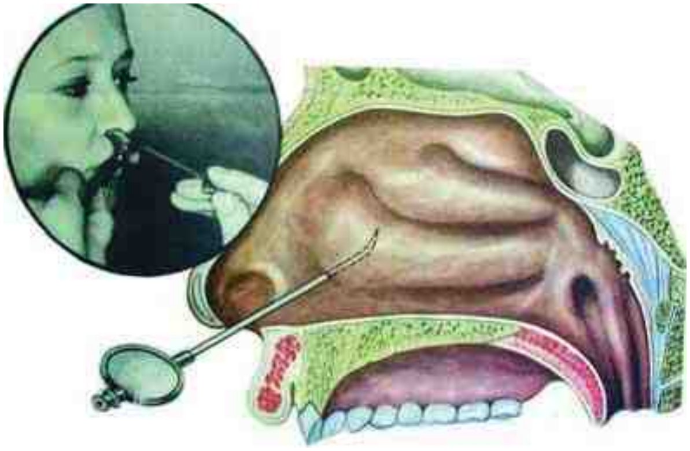
После прокола содержимое пазухи сначала пытаются аспирировать шприцем, затем при слабом давлении вводят промывную жидкость: раствор фурацилина, физиологический раствор. В шприце не должно быть воздуха. Предварительная аспирация нередко выявляет гнойное или серозное содержимое пазухи или кисты; при промывании же серозная и даже гнойная жидкость, смешиваясь с промывной, может остаться незамеченной. Если игла стоит выше уровня жидкости или гной густой, аспирация ничего не даёт. При наличии гноя промывная жидкость, вытекая через соустье, становится молочно-мутной или содержит комки гноя. Отрицательный результат промывания ещё не означает, что пазуха здорова: возможен очень густой, не вымываемый гной или негнойное поражение (отёчно-катаральная, грибковая, полипозная формы).
Вводить в пазуху воздух не рекомендуется из-за опасности воздушной эмболии. Важнейшая мера её профилактики заключается в отказе от продувания пазухи как до, так и после промывания.
Если при лёгком давлении на поршень жидкость не поступает, игла, вероятно, упёрлась в противоположную стенку: её оттягивают на 2–4 мм и возобновляют промывание. Если просвет иглы забит кусочками кости, мягких тканей или плотной слизи, его прочищают мандреном, а при неудаче выполняют новый прокол. Затруднённое нагнетание жидкости при обычном давлении связано, как правило, с воспалительным сужением естественного соустья, поэтому средний носовой ход анемизируют тщательно и при пункции через нижний.
Наиболее частым осложнением является эмфизема или инфильтрат мягких тканей щеки, клетчатки глазницы и век. Оно возникает, когда игла проходит через латеральную или верхнюю стенку пазухи и жидкость попадает в мягкие ткани (так называемый щёчный или орбитальный прокол); появляется припухлость щеки или нижнего века. Промывание в этом случае прекращают и с профилактической целью назначают антибактериальную терапию. Редко развиваются абсцесс или флегмона орбитальной клетчатки, чаще при пункции через средний носовой ход. Воздушная эмболия встречается крайне редко, по данным И. Я. Темкина (1967), в 1 случае на 500 000; она возможна при пункции малых пазух с толстыми стенками, когда игла не прокалывает, а оттесняет слизистую оболочку и повреждает мелкие сосуды. В зависимости от количества воздуха и места его попадания возникают нарушения зрения, потеря сознания, судороги, парезы и параличи, а при попадании в сердце более 6–7 см³ воздуха возможен летальный исход.
Пункции выполняют ежедневно или через день, пока в промывной жидкости обнаруживается гнойное отделяемое. В пазуху в зависимости от характера процесса вводят антибиотики, антисептики, глюкокортикостероиды, ферменты. На курс лечения приходится 7–8 пункций. При сохранении гнойного отделяемого показано хирургическое лечение.
Трепанопункция лобной пазухи
Трепанопункция показана при остром или обострении хронического гнойного фронтита: головная боль усиливается при наклоне головы вниз, при перкуссии и пальпации передней стенки лобной пазухи, беспокоят заложенность носа и повышение температуры тела. На рентгенограмме или компьютерной томограмме выявляются снижение пневматизации или уровень жидкости в лобной пазухе, при эндоскопии видны гнойные выделения из-под средней носовой раковины и в общем носовом ходе. Ещё одним показанием служит неэффективность консервативного лечения в течение 1–2 суток.
Обезболивание местное инфильтрационное: 2–3 мл 1% раствора новокаина или 1–2% раствора лидокаина вводят в кожу и надкостницу в области передней или нижней стенки лобной пазухи. Слизистую оболочку полости носа в области среднего носового хода обязательно анемизируют.
Перед операцией по профильной рентгенограмме определяют переднезадний размер лобной пазухи. Он должен быть не менее 1,0 см, иначе возникает опасность повреждения мозговой стенки пазухи. Наиболее распространён прибор для трепанопункции М. Е. Антонюка (1976): сверла с ручным приводом и ограничителем глубины и набор канюль для фиксации отверстия и промывания пазухи. Точку трепанопункции находят, отступив на 1–1,5 см по биссектрисе прямого угла, образованного вертикальной срединной линией лица и горизонтальной линией по верхнему краю глазницы. Разметку наносят спиртовым раствором бриллиантового зелёного.
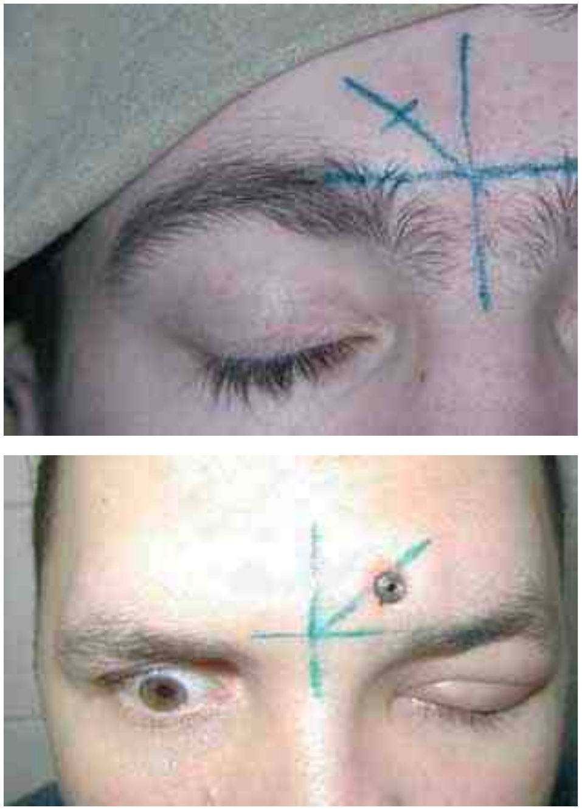
Трепанобор устанавливают на коже перпендикулярно передней стенке пазухи и, умеренно надавливая, рассекают кожу до кости. Равномерно вращая ручку сверла по часовой стрелке, проходят кость до ощущения проваливания в пазуху. В образованное отверстие на всё время лечения вводят металлическую канюлю, через которую пазуху промывают антисептиками и вводят антибиотики.
Реже применяют пункцию через нижнюю (глазничную) стенку по Ю. А. Устьянову (1972). Точка вкола находится на 0,5 см ниже надбровной дуги, на середине расстояния между средней линией лба и надглазничной вырезкой. После инфильтрационной анестезии толстую инъекционную или укороченную иглу Куликовского вращательными движениями направляют перпендикулярно нижней стенке пазухи вверх, кзади и медиально. В просвет иглы вводят подключичный катетер и фиксируют его к коже.
Подслизистая резекция перегородки носа
Подслизистая резекция перегородки носа заключается в подслизистом удалении деформированных участков костно-хрящевого отдела перегородки ради восстановления носового дыхания и относится к самым распространённым операциям оториноларинголога.
Операция показана при искривлении перегородки носа с нарушением носового дыхания, при полной или частичной обтурации одной половины носа, при сочетании искривления перегородки с бронхиальной астмой, спазмом гортани, головной болью, рефлекторным кашлем, а также при косметическом дефекте наружного носа в сочетании с деформацией перегородки. Резекцию выполняют и как предварительный этап других вмешательств: вскрытия клеток решётчатого лабиринта и клиновидной пазухи, операций на слёзном мешке, закрытия назальной ликвореи, эндоназального доступа к гипофизу.
Предпочтителен эндотрахеальный наркоз, допустима местная анестезия. Как правило, и при наркозе слизистую оболочку инфильтрируют 1% раствором новокаина или лидокаина с добавлением 0,1% раствора адреналина в соотношении 1:100 000 (одна капля адреналина на 5 мл анестетика). Инфильтрация отслаивает слизистую оболочку от хряща (гидропрепаровка) и значительно уменьшает кровоточивость. За 30–40 мин до операции проводят премедикацию: наркотический анальгетик, антигистаминный препарат и атропин. После инфильтрации выжидают 8–10 мин до полной анемизации и анестезии.
Узким скальпелем проводят дугообразный разрез кожи в левой половине преддверия носа снизу вверх, от дна вдоль каудального края четырёхугольного хряща или отступив от него кзади на 2–3 мм. Разрез доходит до хряща и называется полупроникающим (по Котллу). Классический разрез по Киллиану проходит глубже, по слизистой оболочке, на расстоянии 7–8 мм от края четырёхугольного хряща, и иногда ведёт к разрывам слизистой оболочки и перфорации. В части случаев разрез выполняют на стороне большего искривления.
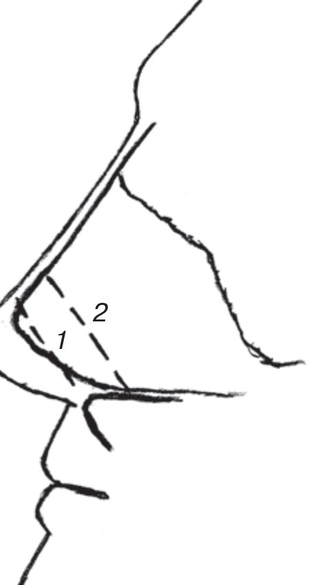
Острым распатором отсепаровывают слизистую оболочку левой стороны обязательно вместе с надхрящницей: при правильном слое видна гладкая бессосудистая поверхность хряща. В нижних отделах, у переднего носового гребня, слизистая оболочка плотно сращена с костью, и здесь её отделяют скальпелем, а не распатором. При гребнях, шипах и травме носа в анамнезе слизистая оболочка отделяется с трудом; тогда сначала резецируют освобождённые участки вокруг гребня, а затем сам гребень.
Затем на расстоянии 4–5 мм от края хряща выполняют сквозной разрез хряща и через него отсепаровывают слизистую оболочку с надхрящницей с противоположной стороны. В левую половину носа вводят удлинённый носорасширитель так, чтобы скелет перегородки оказался между браншами, а листки слизистой оболочки снаружи от них. Острым изогнутым распатором разъединяют четырёхугольный хрящ и перпендикулярную пластинку решётчатой кости (задняя хондротомия). Мобилизованный хрящ и изменённые участки костного отдела удаляют окончатыми щипцами Брюнингса. Для сохранения опорной функции в верхних отделах оставляют полоску четырёхугольного хряща высотой не менее 1 см. Костные гребни у передненижнего угла перегородки и вдоль дна носа, суживающие вход в нос и общий носовой ход, удаляют долотом.
Из пространства между листками слизистой оболочки удаляют кровь и сгустки, листки тщательно сопоставляют, края разрывов расправляют. При выраженной деформации, потребовавшей удаления больших фрагментов скелета, или при значительных разрывах слизистой оболочки желательно реимплантировать выпрямленный скальпелем аутохрящ и наложить фиксирующие П-образные швы тонкой нитью. На разрез в преддверии носа накладывают 1–2 шва.
При правильной анестезии и бережной технике операция почти бескровна. Если при снятии долотом костного гребня в передненижних отделах повреждена резцовая артерия и возникает сильное кровотечение, кровоточащий участок залепляют размятым воском. Операцию заканчивают тампонадой полости носа эластическими пальчиковыми тампонами с вазелиновым маслом или 10% метилурациловой мазью, что предупреждает скопление крови между листками слизистой оболочки. Тампоны удаляют через сутки. Вместо тампонады всё чаще применяют септальные шины, фиксированные к перегородке сквозными швами: они сохраняют носовое дыхание, улучшают заживление и легче переносятся.
Септопластика
Классическая подслизистая резекция применяется всё реже. При ней удаляются значительные участки опорного скелета перегородки, что ведёт к послеоперационной флотации перегородки, перфорации, атрофии слизистой оболочки. Резекция неэффективна при подвывихе каудального отдела четырёхугольного хряща.
Щадящие вмешательства сохраняют опору носа: методика вращающейся двери, методика дисков, аутореимплантация хряща со шовной фиксацией, насечки и клиновидные иссечения хряща с учётом законов его биомеханики (Fry H., 1963). Поэтому операцию при искривлении перегородки носа правильнее называть септопластикой, а выполнять её следует по правилам пластической хирургии, под операционным микроскопом или эндоскопом. Септопластика уменьшает риск флотации и перфорации перегородки, атрофии слизистой оболочки и послеоперационной гематомы.
Конхотомия
Конхотомия представляет собой частичное удаление носовой раковины по её свободному краю. В послеоперационном периоде развивается склерозирующий рубцовый процесс, раковина уменьшается, общий носовой ход расширяется. Чаще гипертрофируется нижняя носовая раковина. По данным В. Т. Пальчуна и соавт. (2000), после щадящего удаления слизистой оболочки по краю нижней раковины её функция в отдалённом периоде восстанавливается практически полностью, тогда как при гипертрофическом рините без краевого отсечения раковины носовое дыхание полностью не восстанавливается.
Показанием служит хронический гипертрофический ринит (диффузная кавернозная, фиброзная, экссудативная, сосочковая формы) с затруднением носового дыхания, выделениями и нарушением обоняния вплоть до аносмии. Операция показана и тогда, когда недостаточность носового дыхания привела к фарингиту, ларингиту, трахеиту, бронхиту, а также при рефлекторных неврозах, например головной боли, на фоне гипертрофического ринита.
Обезболивание местное или общее. При местной анестезии слизистую оболочку раковины смазывают 3% раствором дикаина (3% кокаином, 10% лидокаином), затем инфильтрируют 1% раствором лидокаина или новокаина. Сосудосуживающие средства к анестетику лучше не добавлять: сокращение тканей затрудняет операцию.
При гипертрофии всей нижней носовой раковины на её край накладывают мягкий сосудистый зажим и срезают ткани по зажиму изогнутыми ножницами. Бранши вводят горизонтально или косо так, чтобы одна находилась в нижнем носовом ходе, а другая над раковиной. Если край раковины прижат к боковой стенке носа, её предварительно отодвигают медиально элеватором. Ножницы вводят до замка и, непрерывно продвигая вперёд, режут всё время частью бранш у замка. Не срезанный ножницами задний конец удаляют полипной петлёй. Иногда зажим накладывают на 3–4 мин, снимают и срезают край слизистой оболочки по образовавшейся борозде. Ограниченную гипертрофию переднего или заднего конца удаляют петлёй, изогнутыми ножницами или микродебридером под контролем микроскопа или эндоскопа. Операцию заканчивают тампонадой эластическими пальчиковыми тампонами или мазевой турундой на сутки.
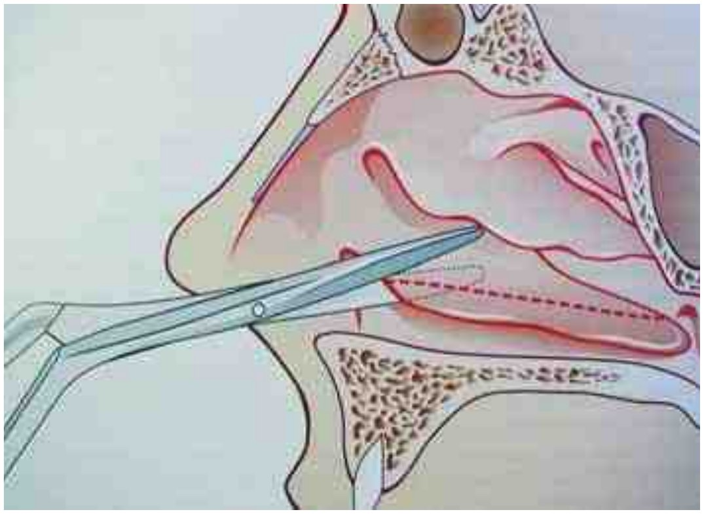
Подслизистая конхотомия сохраняет слизистую оболочку. По краю нижней носовой раковины проводят продольный разрез до кости, тонким элеватором отсепаровывают слизистую оболочку с выпуклой, затем с вогнутой (нижней) поверхности раковины. Освобождённую кость иссекают ножницами Штрюйкена в необходимых пределах, слизистую оболочку укладывают на место и фиксируют тампонами. Под эндоскопическим контролем аналогичное вмешательство выполняют микродебридером. В обе половины носа вводят эластические тампоны и удаляют их на следующий день.
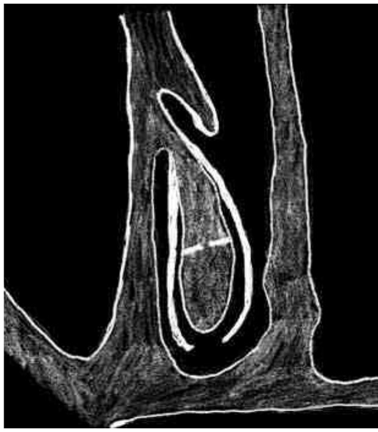
Избыточная конхотомия ведёт к чрезмерной аэрации полости носа, избыточному рубцеванию и атрофии. Прижигание нижних раковин гальванокаутером и кислотами в последние годы применяют редко: оно малоэффективно и вызывает спаечно-рубцовый процесс.
Вазотомия
Вазотомия заключается в подслизистой отсепаровке слизистой оболочки от кости нижней носовой раковины. Кавернозные тела разрушаются, формируется рубцовый процесс, и раковина уменьшается в толщину. Операция показана при гипертрофическом рините с выраженным кавернозным компонентом, при отёке и увеличении раковин, которые хорошо сокращаются после адреналина. Пациентов беспокоят затруднение носового дыхания, заложенность, приступы чихания, обильные водянистые или слизистые выделения, снижение обоняния, зуд в носу, возможна головная боль. При вазомоторном рините с аллергическим компонентом операцию выполняют вне обострения и на фоне антигистаминной терапии.
Обезболивание местное: слизистую оболочку смазывают 10% лидокаином (5% кокаином, 2% дикаином), затем в толщу слизистой оболочки переднего отдела нижней носовой раковины вводят 2–3 мл 1% новокаина или лидокаина без сосудосуживающих средств.
В области переднего конца нижней носовой раковины узким скальпелем проводят разрез длиной 0,4–0,5 см до кости. Узким распатором входят в толщу слизистой оболочки до кости и, прижимаясь к верхней (латеральной) поверхности костной основы раковины, мелкими движениями отсепаровывают слизистую оболочку кзади на глубину около 3–4 см, не нарушая её целости. Операцию завершают тампонадой эластическим тампоном, который удаляют через сутки.
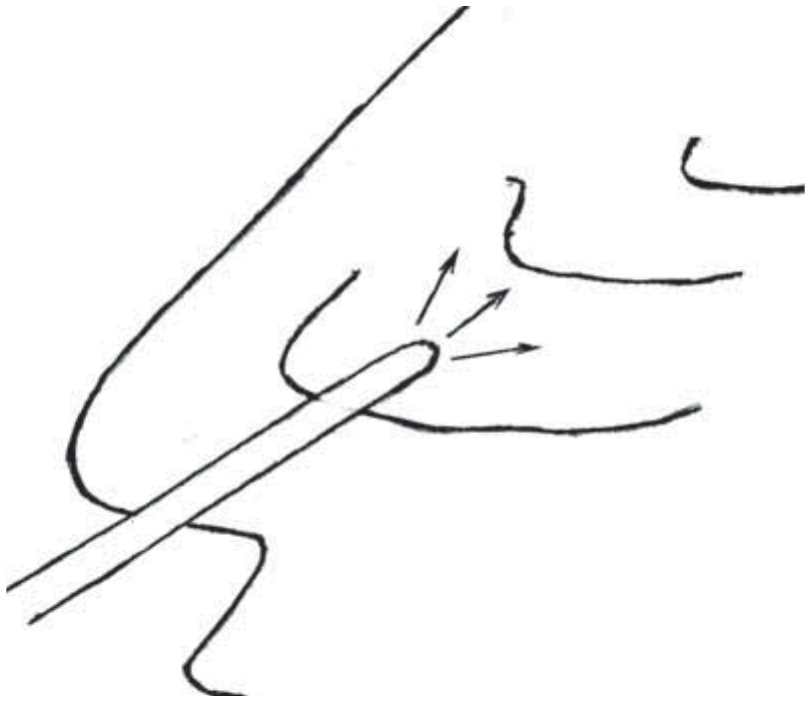
Латероконхопексия
Латероконхопексия заключается в надламывании носовой раковины и прижатии её к боковой стенке полости носа для расширения общего носового хода. Она показана при гипертрофической и вазомоторной формах ринита и при медиальном стоянии носовой раковины, суживающем общий носовой ход. Операцию выполняют на нижней носовой раковине, иногда коррекции требует и медиально стоящая средняя раковина.
После смазывания слизистой оболочки 10% лидокаином в толщу переднего конца нижней носовой раковины вводят 2–3 мл 1% новокаина. Распатор или браншу носорасширителя Киллиана вводят между раковиной и латеральной стенкой полости носа и отводят раковину медиально к перегородке, надламывая её у места прикрепления (медиализация). Затем бранши располагают между перегородкой и раковиной и прижимают раковину к боковой стенке носа (латерализация). Как правило, вазотомию, латерализацию нижней носовой раковины или щадящую конхотомию сочетают с подслизистой резекцией перегородки носа или септопластикой.
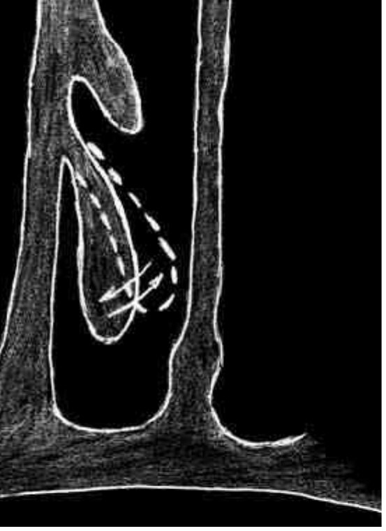
Репозиция костей носа при острой травме
Репозиция показана при переломе костей наружного носа со смещением отломков и косметическим дефектом. Чаще всего встречаются боковое смещение и седловидная деформация наружного носа.
Оптимальным сроком считаются первые сутки после травмы, однако вправление возможно до 4 нед. Если по анамнезу и данным обследования диагностировано сотрясение головного мозга II–III степени (головная боль, тошнота, рвота, слабость, неврологическая симптоматика), репозицию откладывают на 7–8 суток.
Обезболивание местное, инфильтрационное и аппликационное: 1–2 мл 1% раствора новокаина или 2% раствора лидокаина вводят в область перелома, слизистую оболочку полости носа смазывают 10% раствором лидокаина, 2% раствором дикаина или 5% раствором кокаина. Пациент сидит или лежит.
При боковом смещении наружного носа влево отломки вправляют давлением большого пальца правой руки, при смещении вправо — левой (пальцевая репозиция). Давление может быть значительным; в момент вправления, как правило, слышен характерный хруст. При вдавленном переломе применяют носовые элеваторы Ю. Н. Волкова: соответствующий элеватор вводят в полость носа на заранее измеренную глубину и тракцией кпереди и кверху восстанавливают положение спинки носа. При одновременном смещении отломков кзади и в сторону выполняют пальце-инструментальное вправление: элеватором тянут отломки кпереди и одновременно большим пальцем устраняют боковое смещение. При отсутствии элеваторов используют прямой пинцет или зажим, концы которого обёрнуты марлей или закрыты резиновой трубкой.

Если после репозиции при пальпации определяется подвижность отломков, их фиксируют тампонадой носа. При множественном переломе необходима более прочная и длительная фиксация: после аппликационной анестезии верхние и средние отделы полости носа тампонируют турундой, пропитанной непосредственно перед введением расплавленным парафином (температура плавления 50–54 °С). Парафин быстро застывает и надёжно удерживает кости, а дыхание через нижние отделы носа сохраняется. Парафиновый тампон удаляют через 7 дней, но он может оставаться в носу до 12 суток, что важно для правильного сращения отломков. Возможна и наружная фиксация гипсом, коллоидной повязкой или быстротвердеющей пластмассой: полость носа при этом не обтурируется, и пациент переносит её легче.
Посттравматическая деформация наружного носа часто сочетается с переломом перегородки носа. В таком случае одновременно выполняют репозицию и фиксацию перегородки, иначе в отдалённом периоде сохраняется стойкое нарушение носового дыхания, требующее операции. Травма носа нередко сопровождается сотрясением головного мозга и переломом стенок глазницы, что требует участия невролога, стоматолога, хирурга, офтальмолога.
Радикальная операция на верхнечелюстной пазухе
Радикальные операции на околоносовых пазухах показаны при хронических экссудативных, альтеративных, продуктивных и смешанных формах синусита, при одонтогенном гайморите, при остром гнойном синусите с реактивными изменениями мягких тканей и распространением процесса в глазницу или полость черепа, а также при черепно-лицевой травме с оскольчатым переломом стенок пазухи. При необратимых изменениях слизистой оболочки они наиболее эффективны, поскольку хроническое воспаление не поддаётся консервативному лечению, а неполное удаление изменённой слизистой оболочки не санирует пазуху. Даже после полного её удаления через 7–8 мес. пазуха эпителизируется с восстановлением мерцательного эпителия.
Обезболивание, как правило, общее (эндотрахеальный наркоз), в части случаев применима местная инфильтрационная и проводниковая анестезия. Чаще всего операцию выполняют по Колдуэллу — Люку, реже по Денкеру.
Пациент лежит на спине. В преддверии полости рта под верхней губой на 0,5 см выше переходной складки проводят горизонтальный разрез до кости, начиная в 8–10 мм от уздечки и продолжая до 5–6-го зуба; длина разреза в среднем около 4 см. Распатором мягкие ткани с надкостницей смещают кверху до полного обнажения клыковой ямки, сохраняя выходящую у её верхнего края вторую ветвь тройничного нерва. Долотом в самом тонком месте передней стенки формируют отверстие и расширяют его щипцами Гаека примерно до 1,5–2 см в диаметре, чтобы осмотреть всю пазуху. Изогнутым распатором и костной ложкой удаляют всю слизистую оболочку, гнойные и некротические массы, полипы.
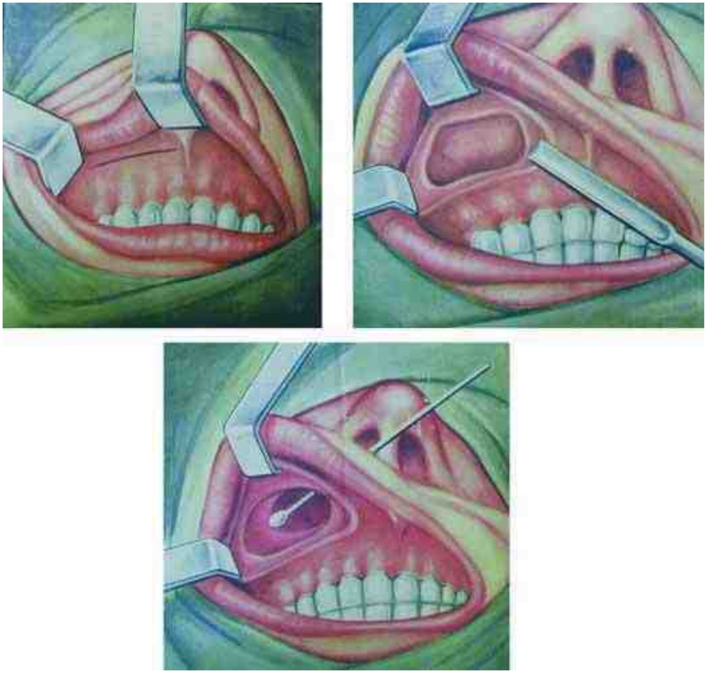
Поскольку при хроническом гайморите в процесс, как правило, вовлекаются клетки решётчатого лабиринта, их вскрывают в области верхнего медиального угла пазухи и удаляют изменённые ткани инструментом Гартмана. Операцию заканчивают наложением соустья (контрапертуры) с полостью носа в нижнем носовом ходе размером 2 × 3 см. Нижний край контрапертуры сглаживают острой ложкой до уровня дна полости носа, чтобы между дном носа и дном пазухи не оставалось порога. При перфоративном одонтогенном гайморите одновременно пластически закрывают свищ лунки зуба местными тканями преддверия рта или нёба.
Для профилактики кровотечения в пазуху и решётчатый лабиринт вводят длинную узкую марлевую турунду с антибактериальной мазью, выводя её конец через контрапертуру в нижний носовой ход; турунду удаляют через сутки. Вместо неё можно ввести латексный раздувной баллон (пневмотампон), который также удаляют на следующий день. Баллон предпочтительнее: он создаёт менее благоприятные условия для раневой инфекции и сохраняет на стенках пазухи фиброзно-некротический слой, необходимый для разрастания эпителия из области соустья. После операции пациент находится в стационаре 6–7 дней; начиная с 3-го дня пазуху 2–3 раза промывают через контрапертуру растворами антисептиков. Назначают анальгетики, антигистаминные и симптоматические средства; целесообразна антибактериальная терапия в течение нескольких дней.
Эндоскопические операции на околоносовых пазухах
Эндоназальные операции под контролем эндоскопа или микроскопа (микроэндоскопическая полисинусотомия) показаны при хроническом серозном или экссудативном синусите, ограниченном полипозном синусите, неинвазивном грибковом поражении, кистах и инородных телах пазух, буллах и гиперплазии слизистой оболочки остиомеатального комплекса. Они не рекомендуются при альтеративных и продуктивных формах хронического синусита, внутричерепных риногенных осложнениях, опухолях полости носа и околоносовых пазух, остеомиелите, рубцовой и костной облитерации соустий после предыдущих операций; в этих случаях эндоскоп позволяет уточнить диагноз, взять биопсию, иногда частично удалить очаг.
Наиболее распространена методика Мессерклингера: пазухи вскрывают шаг за шагом спереди назад. Сначала резецируют крючковидный отросток, затем последовательно осматривают решётчатую буллу, передние клетки решётчатого лабиринта, решётчатую воронку и естественное соустье верхнечелюстной пазухи, лобную бухту, средние и задние клетки и, наконец, клиновидную пазуху. По Виганду операцию ведут сзади наперёд, начиная с клиновидной пазухи, и выполняют более радикально, с полным вскрытием решётчатого лабиринта и соустьем верхнечелюстной пазухи под нижней носовой раковиной практически при всех формах гайморита. Постоянный визуальный контроль обеспечивает точность, минимальную кровопотерю и сохранение неизменённой слизистой оболочки.
Пациент лежит на спине; операцию выполняют, как правило, под наркозом, возможна местная анестезия после премедикации наркотическим анальгетиком и антигистаминным препаратом. В полость носа вводят турунду с 10% лидокаином, а за 8–10 мин до операции в средний носовой ход на 2–3 мин под контролем эндоскопа вводят турунду с 0,1% раствором адреналина. Затем инфильтрируют 1% новокаин или лидокаин с адреналином 1:100 000 по 1–1,5 мл в каждую точку: в передний конец средней носовой раковины, в место её прикрепления к латеральной стенке носа, в основание крючковидного отростка. Иглу вводят только в толщу слизистой оболочки, иначе она перфорирует тонкие стенки решётчатого лабиринта и анестетик вытекает в полость носа.
Вскрытие верхнечелюстной пазухи начинают с надлома средней носовой раковины и смещения её медиально к перегородке. Серповидным скальпелем проводят дугообразный разрез слизистой оболочки у основания крючковидного отростка глубиной не более 1–2 мм: от уровня прикрепления средней раковины выпуклой кпереди дугой кзади чуть ниже края раковины. Отсечённый отросток вывихивают медиально и удаляют щипцами Блэксли вращательными движениями. Затем удаляют решётчатую буллу и идентифицируют основную пластинку средней носовой раковины, крышу решётчатого лабиринта, бумажную пластинку и естественное соустье верхнечелюстной пазухи. Соустье, которое редко удаётся увидеть даже боковой оптикой, находят зондом у нижнего края крючковидного отростка, несколько кзади и над местом прикрепления нижней носовой раковины. При необходимости его расширяют обратным выкусывателем кпереди и книзу до 5–8 мм, осматривают пазуху эндоскопом с оптикой 70° и удаляют кисты, полипы, грибковые массы. Дополнительное соустье соединяют с основным. Операцию заканчивают рыхлой тампонадой марлевой турундой с противовоспалительной мазью на сутки.
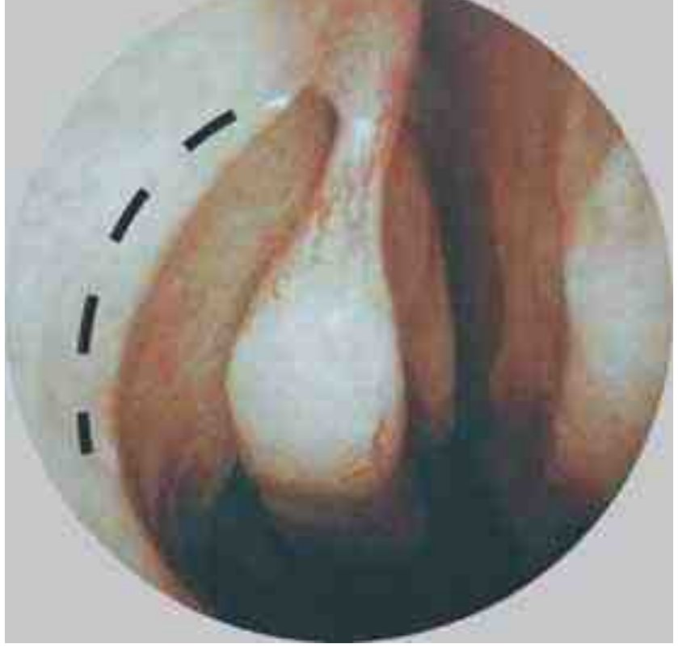
При поражении лобной пазухи начинают с ревизии лобного кармана: после смещения средней раковины медиально зондом ищут соустье чуть глубже, латеральнее и кзади от места прикрепления её переднего конца. Изогнутой ложкой по Куну зондируют лобно-носовой канал кверху, отступив примерно 0,5 см от края раковины, изогнутыми щипцами Блэксли удаляют полипозные ткани и расширяют канал. Выраженный лобно-носовой массив сглаживают рашпилями или тонкими изогнутыми долотами под контролем угловых эндоскопов. Отверстие расширяют кпереди и не удаляют всю слизистую оболочку вокруг него, чтобы избежать рубцового стеноза соустья. Полость рыхло тампонируют узкими турундами с мазью на сутки.
Клетки решётчатого лабиринта вскрывают при хроническом экссудативном, альтеративном и продуктивном этмоидите, как этап полисинусотомии и для доступа к основанию черепа, например при назальной ликворее. После резекции крючковидного отростка щипцами Блэксли поэтапно удаляют буллу, изменённые передние и средние клетки, полипы и межклеточные перегородки. Бумажную пластинку здесь легко перфорировать, поэтому все удалённые ткани помещают в физиологический раствор: клетчатка глазницы в нём всплывает. Задние клетки вскрывают через базальную пластинку средней раковины, расширяя отверстие вверх и латерально, с осторожностью из-за опасности кровотечения из передней и задней решётчатых артерий. Ориентирами служат бумажная пластинка латерально, крыша решётчатого лабиринта сверху и средняя раковина медиально. Узкие мазевые турунды удаляют через сутки.
Клиновидную пазуху вскрывают при остром гнойном сфеноидите без эффекта консервативной терапии, при хронических формах сфеноидита и при вмешательствах на основании средней черепной ямки. Естественное соустье находят под эндоскопом на уровне заднего края верхней носовой раковины, чуть латеральнее перегородки, после латерализации средней раковины и расширяют выкусывателем. Трансэтмоидально переднюю стенку пазухи определяют после широкого вскрытия задних клеток и зондирования соустья, перфорируют тонкой ложкой и удаляют круговыми кусачками полностью. Пазуху промывают физиологическим раствором и 1% диоксидином. Необходимо помнить о ветвях крылонёбной артерии, зрительном нерве и внутренней сонной артерии, прилежащих к боковой стенке пазухи и иногда лежащих в её просвете. Тугая тампонада не нужна: турунду с противовоспалительной мазью вводят под среднюю раковину на сутки, назначают короткий курс антибактериальной терапии, анальгетики и временно запрещают сморкаться.
Наиболее серьёзные осложнения связаны с повреждением глазницы и основания черепа; их риск резко возрастает при обильном кровотечении и плохом обзоре операционного поля, и если кровотечение не удаётся остановить, безопаснее прекратить вмешательство и выполнить его вторым этапом. Глазница может быть повреждена уже первым разрезом серповидным скальпелем через нижнюю часть крючковидного отростка. Обнажение клетчатки глазницы нужно распознать сразу; дефект, как правило, не требует закрытия, но глаз осматривают, а любой экзофтальм расценивают как признак гематомы глазницы, требующей декомпрессии. Ликворея после повреждения основания черепа встречается примерно в 0,5% операций; наиболее уязвима вертикальная (латеральная) пластинка решётчатой пластинки, особенно при её косом расположении (по: Watkinson J. C., Clarke R. W. (eds.) «Scott-Brown's Otorhinolaryngology Head & Neck Surgery», 8th ed. (CRC Press, 2018), т. 1, гл. 98, с. 1076–1077).
Полипотомия полости носа
Операция заключается в удалении полипозно изменённой слизистой оболочки полости носа, а при необходимости и околоносовых пазух. Полипы, как правило, исходят из слизистой оболочки клеток решётчатого лабиринта или верхнечелюстных пазух, выходят из среднего и верхнего носовых ходов и могут через хоаны распространяться в носоглотку. Хоанальный полип висит на тонкой ножке и чаще исходит из верхнечелюстной пазухи (антрохоанальный полип), реже из клиновидной пазухи или решётчатых клеток.
Показаниями служат затруднение носового дыхания вплоть до полной обтурации полости носа, нарушение обоняния из-за закрытия обонятельной щели, рефлекторные неврозы (головная боль, астмоидные приступы), заболевания среднего уха при обтурации полипами слуховой трубы. Одного хирургического лечения при полипозном синусите недостаточно. При бронхиальной астме и аллергическом компоненте лечение состоит из трёх этапов: системные глюкокортикостероиды за 3 дня до операции и 3 дня после неё, хирургическая санация и затем топические интраназальные глюкокортикостероиды в течение 4–6 мес. с ежегодной коррекцией при динамическом наблюдении.
Операцию выполняют под наркозом или местной анестезией. При местной анестезии места прикрепления полипов, средний и верхний носовые ходы, раковины, перегородку и дно носа смазывают 10% раствором лидокаина или 2% раствором дикаина, а остиомеатальную область инфильтрируют 3–5 мл 1% новокаина или 1–2% лидокаина.
Полипную петлю надевают на полип, подводят к основанию, затягивают и отрывают полип вместе с ножкой, стремясь тянуть за ножку и не затягивая петлю до конца. Полипы верхнезадних отделов, исходящие из задних решётчатых клеток, удаляют с особой осторожностью из-за возможной связи с решётчатой и бумажной пластинками. После удаления крупных и средних полипов среднюю раковину отодвигают медиально удлинённым носорасширителем и инструментом Гартмана вскрывают средние и частично передние решётчатые клетки, начиная с буллы, удаляя их вместе со слизистой оболочкой, грануляциями и полипами. Задние клетки вскрывают через базальную пластинку средней раковины спереди назад до клиновидной пазухи. Полость носа тампонируют эластическими тампонами, которые удаляют на следующий день.
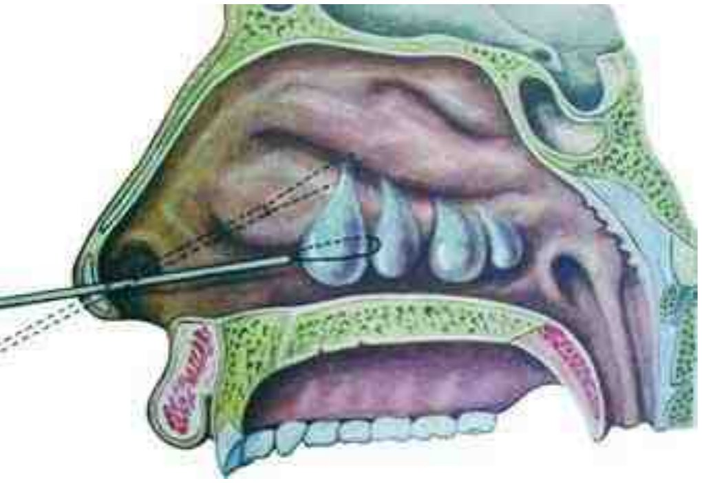
Свод полости носа в латеральных отделах может лежать выше решётчатой пластинки, и её повреждение ведёт к ликворее и менингиту. Ориентиром служит свободный край средней носовой раковины: медиальнее него любые манипуляции в верхних отделах полости носа запрещены. Чрезмерное отклонение латерально грозит проникновением в глазницу. Полное вскрытие решётчатого лабиринта без эндоскопической техники невозможно и опасно, поэтому в настоящее время эти операции выполняют микроэндоскопически с применением шейвера.
Хоанальный полип удобнее всего удалять эндоназально крючком Ланге. Крючок вводят, повернув несколько латерально, до упора и обратным движением сзади наперёд ведут вдоль нижнего края средней раковины, захватывая ножку. Захват ощущается по сопротивлению; при тракции кпереди ножка обрывается, и полип падает в глотку и сплёвывается или извлекается через общий носовой ход. Если неясно, из какой половины носа исходит полип, манипуляцию повторяют с обеих сторон. Очень крупный полип можно захватить через глотку носоглоточными щипцами.
Остановка носового кровотечения: передняя и задняя тампонада
Самый простой способ остановки кровотечения из передних отделов перегородки носа, чаще всего из зоны Киссельбаха, заключается в прижатии крыла носа к перегородке на стороне кровотечения. В преддверие носа дополнительно вводят ватный шарик, смоченный 3% перекисью водорода или сосудосуживающим препаратом; предварительно следует убедиться, что причиной кровотечения не является повышение артериального давления. При повторных кровотечениях из видимого участка сосуд прижигают после смазывания 10% лидокаином: 30–50% раствором нитрата серебра, электрокаутером, углекислотным или неодимовым ИАГ-лазером, применяют и криовоздействие.
Тампонаду выполняют, как правило, в положении пациента сидя. Запрокидывать голову нельзя: сдавление яремных вен усиливает кровотечение, кровь заглатывается, контроль кровопотери затруднён, а кровь в желудке может вызвать рвоту. Желательна предварительная анестезия 10% лидокаином, однако при продолжающемся кровотечении она удаётся не всегда.
Для передней тампонады по Микуличу используют марлевую турунду шириной 1–2 см и длиной до 70 см, пропитанную мазью с антибиотиком, 10% метилурациловой мазью или гемостатической пастой, слегка отжатую между браншами пинцета. Турунду захватывают штыкообразным пинцетом или щипцами Гартмана в 8–10 см от конца и вводят вдоль дна полости носа до хоан, укладывая первую петлю. Пинцет вынимают и вводят вновь без турунды, чтобы прижать петлю ко дну. Поверх укладывают следующую петлю и так заполняют половину носа снизу вверх; верхние отделы при необходимости тампонируют без петлевой укладки. Свободный конец турунды длиной 8–10 см всё время остаётся снаружи, чтобы турунда не сместилась через хоану в глотку, а в конце его заправляют в преддверие носа. Передняя тампонада состоятельна, только если она тугая, а петли уложены вдоль дна носа по возможности до хоан.
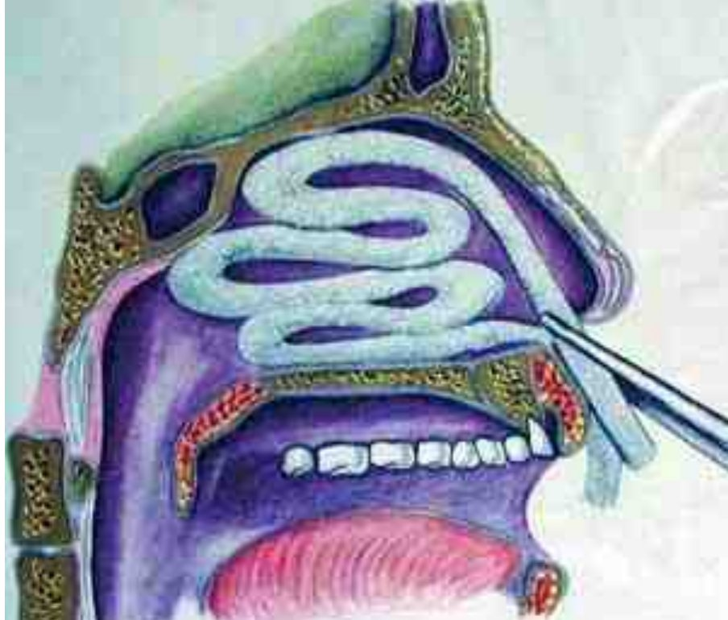
Более щадящую и, как правило, достаточно эффективную тампонаду обеспечивают эластические тампоны: стерильный палец резиновой перчатки, заполненный поролоном. Один или несколько таких тампонов туго вводят в кровоточащую половину носа. Если кровотечение продолжается из другой половины, тампонируют обе. Передний тампон удаляют через 2–3 суток, предварительно пропитав его 3% перекисью водорода. После сильного или возобновившегося кровотечения турунду рационально оставить на 6–7 дней, ежедневно пропитывая раствором антибиотика или аминокапроновой кислоты.
Заднюю тампонаду применяют при неэффективности перечисленных мер. Тампон заранее готовят из марли в виде тюка размером примерно с концевые фаланги сложенных вместе больших пальцев и стерилизуют. Его перевязывают крест-накрест двумя прочными длинными шёлковыми нитями, после чего один конец нити отрезают, а три оставляют (тампон Беллока).
После анестезии 10% лидокаином через кровоточащую половину носа в ротоглотку проводят тонкий резиновый катетер, захватывают его конец и выводят через рот. К нему привязывают две нити тампона и, вытягивая катетер через нос, вводят тампон в рот и далее в носоглотку. Врач, стоя справа от пациента, указательным пальцем правой руки проводит тампон за мягкое нёбо и плотно прижимает к хоане, чему помогает натяжение двух нитей, выведенных через нос. Удерживая нити натянутыми, выполняют переднюю тампонаду этой половины носа и завязывают нити над марлевым валиком у входа в нос обязательно бантиком, чтобы при смещении тампон можно было подтянуть. Третью нить без натяжения проводят между щекой и десной нижней челюсти, выводят изо рта и фиксируют лейкопластырем на щеке или за ухом. За неё задний тампон удаляют, предварительно срезав нити у входа в нос и удалив передний тампон.
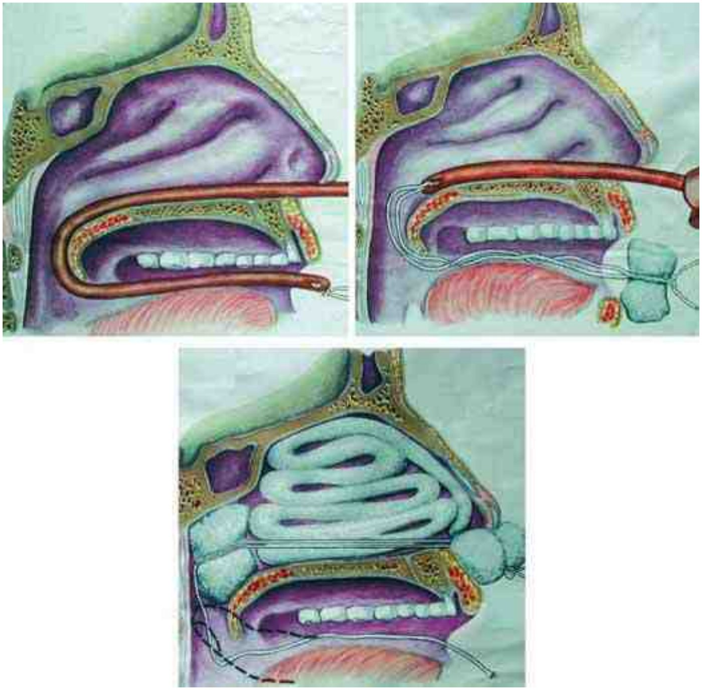
Задний тампон оставляют в зависимости от тяжести кровотечения и склонности к рецидиву, в отдельных случаях до 7–8 дней. Для профилактики синусита и среднего отита тампон пропитывают раствором антибиотика и одновременно назначают системную антибактериальную терапию. Наряду с марлевыми применяют эластические поролоновые и латексные раздувные тампоны, а также синус-катетер ЯМИК.
При рецидивирующих кровотечениях из зоны Киссельбаха, связанных с поверхностным чрезмерным ветвлением сосудов, выполняют подслизистую отсепаровку: под местной анестезией вертикальным или, лучше, широким дугообразным разрезом отслаивают слизистую оболочку с надхрящницей в зоне кровотечения, укладывают её на место и тампонируют; второй разрез позади кровоточивой зоны пересекает приводящие сосуды. Возникающее рубцевание прекращает рецидивы. При неэффективности передней и задней тампонады тяжёлое кровотечение останавливают трансмаксиллярным разрушением клеток решётчатого лабиринта с тугой тампонадой образованной полости на 6–7 дней, ежедневно пропитывая турунду 5% аминокапроновой кислотой и антибиотиками.
Перевязка наружной сонной артерии
Перевязка показана как предварительный этап операций по поводу опухолей головы и шеи и при рецидивирующих тяжёлых носовых кровотечениях при травме головы и шеи. Обезболивание местное инфильтрационное или наркоз.
Пациент лежит на спине с валиком под шеей, голова повёрнута в здоровую сторону. Классический доступ проходит по переднему краю грудино-ключично-сосцевидной мышцы. Удобен и другой доступ: от угла нижней челюсти отступают на 4 см кзади и на 2 см вертикально книзу и от этой точки проводят разрез кожи книзу длиной 8–10 см. Послойно рассекают кожу, подкожную клетчатку, фасцию и платизму; наружную яремную вену отводят или перевязывают и пересекают. Рассекают переднюю стенку влагалища грудино-ключично-сосцевидной мышцы, отводят мышцу крючками и рассекают заднюю стенку влагалища, под которой лежит сосудисто-нервный пучок: снаружи внутренняя яремная вена, кнутри и кпереди общая сонная артерия, позади или между ними блуждающий нерв. Тупо выделяют общую, затем наружную сонную артерию. Наружную сонную артерию отличают от внутренней по ветвям: внутренняя на шее ветвей не отдаёт, а от наружной сразу после бифуркации отходят верхняя щитовидная и язычная артерии.
Артерию перевязывают выше отхождения верхней щитовидной артерии между двумя шёлковыми лигатурами с помощью иглы Дешана. Перед перевязкой убеждаются в правильности выбора сосуда: при его сдавлении должна прекратиться пульсация лицевой и поверхностной височной артерий. Рану ушивают послойно наглухо.
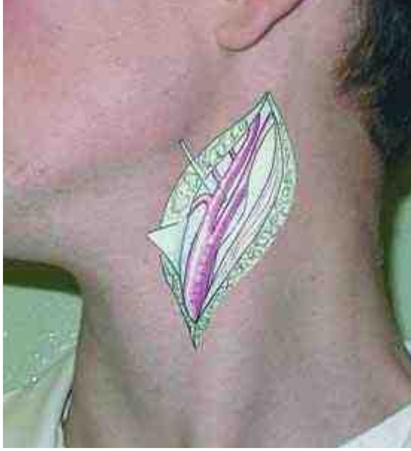
Удаление инородных тел полости носа
Инородные тела полости носа чаще встречаются у детей и выявляются, как правило, в нижнем носовом ходе. Помимо затруднения носового дыхания, длительно находящееся инородное тело вызывает гнойное воспаление и рост грануляций в полости носа и околоносовых пазухах с гнойными выделениями, головной болью, повышением температуры тела. Для диагностики нередко применяют рентгенографию или компьютерную томографию.
Обезболивание местное аппликационное с дополнительной анемизацией раствором адреналина. Тупой крючок или изогнутый пуговчатый зонд под контролем зрения заводят за инородное тело и, подтягивая к себе, извлекают его. Твёрдое округлое инородное тело пинцетом или щипцами удалять нежелательно: бранши соскальзывают и проталкивают его глубже. Мягкие инородные тела (вата, бумага, спичка) удаляют пинцетом. Если после извлечения возникшее носовое кровотечение не останавливается в течение 1–2 мин, выполняют переднюю тампонаду с кровоостанавливающей и противовоспалительной мазью.
Ведение после операций на полости носа, околоносовых пазухах и наружном носе
После эндоназальных вмешательств (септопластика, конхотомия, полипотомия, этмоидотомия) полость носа, как правило, тампонируют на 24 ч. При обильной кровопотере во время операции тампон оставляют до 48 ч; иногда половину тампонов удаляют через 24 ч, остальные на 2–3-й, редко на 4-й день. В каждую половину носа вводят 1–3 эластических тампона, смазанных масляным раствором или мазью с антибиотиком, либо марлевую турунду шириной 2 см с тем же препаратом или гемостатической эмульсией. Пневмотампоны и гидротампоны со встроенной дыхательной трубкой пациенты переносят значительно легче.
После удаления тампона, как правило, наблюдается незначительное кровотечение, которое прекращается самостоятельно; иногда требуются гемостатические препараты (этамзилат, аминокапроновая кислота, кальция глюконат). Ещё через сутки выполняют тщательный туалет полости носа с удалением кровяных корок, анемизацией и удалением оставшихся костных осколков. Далее трижды в день применяют сосудосуживающие капли или аэрозольный деконгестант. Для профилактики высыхания слизистой оболочки и образования корок в полость носа распыляют солевые растворы, используют 10% мазь метилурацила.
При неосложнённом течении пациента выписывают на амбулаторное наблюдение на 3–5-е сутки. В первые две недели он посещает оториноларинголога не реже 2–3 раз в неделю: врач удаляет корки и налёты фибрина, особенно из среднего и верхнего носовых ходов и вскрытых клеток решётчатого лабиринта, и не допускает образования синехий между раковинами и перегородкой носа в местах соприкосновения раневых поверхностей.
После радикальной операции на верхнечелюстной пазухе её, как правило, тампонируют длинной марлевой турундой с мазью, выводя конец через соустье в нижний носовой ход, и удаляют тампон полностью через 24 ч. Без тампонады обходятся лишь при отсутствии выраженной кровоточивости во время операции. Дальнейшее ведение такое же, как после эндоназальных вмешательств. После операции на лобной пазухе дренажную трубку в новом лобно-носовом соустье фиксируют по Б. С. Преображенскому: шёлковой нитью прошивают трубку и все слои края раны и завязывают нить на коже над марлевым валиком, пропитанным спиртом. Дренаж оставляют на 3–4 нед., иногда дольше, периодически промывая пазуху тёплым раствором антисептика или физиологическим раствором, и удаляют через нос после снятия шва на коже лба.
При слизистом, слизисто-гнойном или геморрагическом отделяемом оперированные пазухи каждые 2–3 дня промывают через специальную канюлю тёплым физиологическим раствором или раствором антисептика до полного очищения. В течение 3–4 нед. после операции пациенту рекомендуют самостоятельно промывать полость носа тёплым физиологическим раствором из одноразового шприца на 20 мл с силиконовой трубкой или резиновой спринцовкой. При возможности на 7-е и 20-е сутки выполняют эндоскопию полости носа и оперированных пазух: оценивают заживление, диаметр соустий верхнечелюстных пазух, наличие экссудата, избыточные грануляции, отёк и соприкасающиеся раневые поверхности, где могут образоваться синехии.
После операций на наружном носе для профилактики отёка и гематомы накладывают гипсовую повязку. Если вмешательство ограничивалось кожей, её снимают через 3 дня, после операции на хрящевом скелете через неделю, на костном скелете через 2 нед. Шину готовят из гипсового бинта шириной 10 см: полоску длиной 5–6 см складывают в 4 слоя, опускают в тёплую воду, слегка отжимают и накладывают продольно от кончика носа до середины лба, моделируя по форме носа и не сдавливая ноздри. Боковые края у углов глаз пинцетом заворачивают к середине. Хирург удерживает шину указательными пальцами до затвердевания гипса, затем фиксирует её сверху и снизу двумя полосками лейкопластыря шириной 1–1,5 см.
Источники
- Пальчун В. Т., Лучихин Л. А., Магомедов М. М. Руководство по практической оториноларингологии. — М.: Медицинское информационное агентство, 2010. — Гл. 3, с. 193–250.
Раздел «Учебник» — справочная теория, не клинические рекомендации. Тактика ведения пациента — по разборам КР.